이 글은 전체 2편 중 1편입니다. 긴 영상을 주제 흐름에 맞춰 나누어 정리했습니다.
채널: AgentOS | 길이: 32:34 | 날짜: 20260924
이 글은 전체 2편 중 1편입니다. 아래 분석은 현재 파트에 제공된 세그먼트(0:00~16:04 부근)만을 상세히 다루며, 2편에서 이어질 내용은 연결 맥락으로만 짧게 언급합니다.
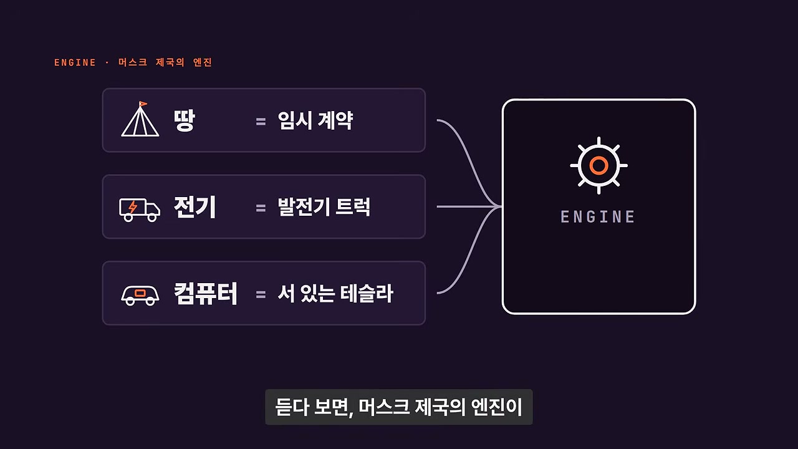
영상은 “올해 1월” 일론 머스크의 AI 회사 xAI에서 일하던 엔지니어 한 명이 팟캐스트에 나왔다고 시작한다. 그는 한 시간 넘게 회사 안에서 일이 어떻게 돌아가는지를 아주 구체적으로 이야기했다. 그리고 나흘 뒤 X에 짧은 글을 올려 xAI를 떠났다고 밝혔다. 이 글은 조회수 400만을 찍었고 미스터비스트까지 답글을 달았다. 혹시 팟캐스트 때문이냐는 반응도 있었지만, 인터뷰는 그 뒤로 여러 매체에 인용되면서 크게 퍼졌다.
화자는 퇴사보다 인터뷰 내용 쪽이 확산의 진짜 이유라고 본다. 세계에서 재산이 가장 많은 사람의 회사가 어떻게 이 속도를 내는지를 안에 있던 사람이 아주 아무렇지 않게 말했기 때문이다. 인터뷰에서 나온 핵심 이미지는 강렬하다. 땅은 임시 계약으로 빌리고, 전기는 트럭에 실은 발전기로 끌어오고, 컴퓨터는 주차장에 서 있는 테슬라 차에서 찾는다. 듣다 보면 머스크 제국의 엔진이 어떤 연료로 돌아가는지가 보인다.
일론 머스크는 포브스 집계로 지금 세계에서 재산이 가장 많은 사람이다. 그 사람이 세운 AI 회사가 안에서 어떻게 돌아가는지를 내부자가 이만큼 자세히 말한 경우는 드물다. 그래서 영상은 그 엔진을 층별로 열어본다. 땅과 전기, 컴퓨터, 코드, 사람, AI 동료, 그리고 머스크가 나타나는 밤까지가 분석 대상이다. 화자는 이 모든 것이 인터뷰에 실제로 나온 장면들이라고 강조한다.
인터뷰의 주인공은 술레이만 고리다. 그는 창업자 출신으로 2025년 초에 xAI에 들어갔고, 인터뷰 당시에는 매크로하드라는 프로젝트 팀에 있었다. 영상 중간중간 인터뷰 클립이 들어가며 한국어 자막이 함께 표시된다. 첫 번째 층은 땅과 전기다. xAI는 미국 테네시주 맨피스의 콜로서스라는 슈퍼컴퓨터를 쥐고 있다. 이 콜로서스를 어떻게 이 속도로 세웠는지가 이후 모든 논의의 출발점이 된다.
콜로서스는 착공부터 가동까지 걸린 시간이 122일이었다. 머스크가 직접 밝혔고 엔비디아도 같은 숫자를 썼다. 이런 슈퍼컴퓨터는 GPU라는 칩을 한 건물에 10만 개 단위로 모아서 돌린다. 그러면 전기가 문제가 된다. AI 학습이 돌아가는 동안 전력 사용량이 순식간에 수메가와트씩 오르내리기 때문이다. 도시 전력망 입장에서는 아주 다루기 어려운 손님이다.
진행자가 콜로서스를 세우던 때가 어땠는지 묻자 고리의 첫 마디는 “무용담도 많고 내기도 많았다”였다. 이어 그는 전력 문제를 다루기 위해 시·주 전력회사와 매우 긴밀하게 협력해야 했다고 설명한다. 콜로서스의 속도는 단순한 공사 속도가 아니라, 전력이라는 물리적 병목을 어떤 방식으로 비켜 가고 임시로 해결했는지의 문제와 연결된다. 이 지점이 다음 섹션의 발전기 트럭 논의로 이어진다.
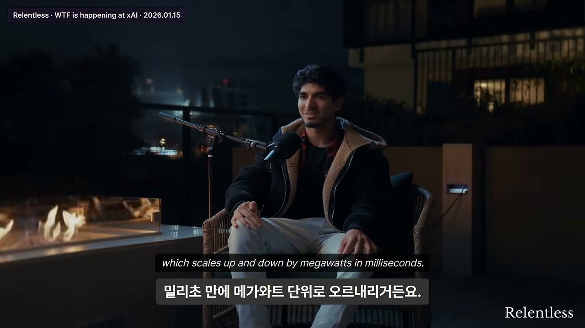
고리는 전력회사와의 협력 구조를 이렇게 설명한다. 전력회사 쪽 수요가 높아지면 xAI는 전력망에서 빠지고, 트럭으로 들여온 이동식 발전기 80대, 어쩌면 그 이상으로만 돌린다. 이때 중요한 조건은 “누구의 학습도 방해하지 않고 매끄럽게” 전환해야 한다는 것이다. AI 학습은 매우 변동성이 큰 GPU와 하드웨어 위에서 돌아가며, 부하가 밀리초 단위로 메가와트 규모까지 오르내린다. 그래서 전력 전환은 단순한 스위치 조작이 아니라 학습 런을 중단시키지 않는 고난도 작업이 된다.
진행자는 데이터센터 옆에 거대한 배터리 팩을 두는 것이 같은 논리인지 묻는다. 배터리는 발전기보다 훨씬 빠르게 부하를 감당하고 균형을 맞출 수 있다. 발전기는 말 그대로 물리적인 회전체의 속도를 올리거나 내려야 하므로 일정 시간이 걸린다. 반면 배터리는 부하 변화에 훨씬 빠르게 반응할 수 있다. 이 비교는 xAI가 전력망과 발전기, 배터리, 커패시터를 조합해 AI 학습의 거친 전력 곡선을 완충하고 있음을 보여준다.
고리는 물리적 관점에서 전력 인프라가 여러 계층으로 이뤄져 있다고 설명한다. 국소 커패시터, 스테이션 또는 데이터 홀 쪽 커패시터, 배터리, 발전기, 그리고 공공 시정부 전력망 순서다. 다만 현재는 이 인프라가 바뀌었을 수도 있다고 덧붙인다. 특히 냉각 쪽처럼 매우 빠르게 반응해야 하는 부분도 있다. 이 계층 구조는 xAI가 전력망에 완전히 의존하지 않고, 자체 발전과 저장 장치를 통해 학습의 연속성을 지키려 한다는 점을 드러낸다.
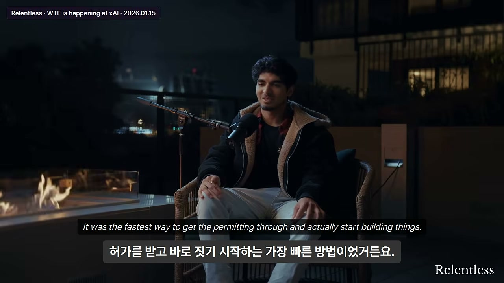
고리는 부지 자체의 임대 계약이 기술적으로 임시였다고 말한다. 그것이 허가를 가장 빨리 받아 실제로 건물을 짓기 시작하는 방법이었다. 그는 언젠가 영구 계약이 되겠지만, 현재는 모든 데이터센터에 대해 아주 단기 임대라고 설명한다. 진행자가 어떻게 그게 가능하냐고 묻자 고리는 지방·주 정부 안에 특별 예외가 있다고 답한다. 예를 들어 카니발 같은 행사를 위해 땅을 임시로 개조하는 조항을 활용했다는 것이다.
진행자는 “그럼 XAI는 사실 카니발 회사냐”고 농담한다. 고리는 “그렇다, 카니발 회사”라고 받는다. 이 농담은 단순한 웃음거리가 아니라, xAI가 정식 영구 시설 허가를 기다리는 대신 임시 예외 조항을 통해 속도를 얻었다는 주장을 상징한다. 이후 공개 기록 검증에서도 이 ‘임시’ 논리가 발전기 허가에까지 반복된다.
영상은 고리의 발언을 공개 기록과 대조한다. 전력회사 쪽 수요가 몰리면 xAI는 전력망에서 빠지고, 트럭으로 들여온 발전기 80대, 어쩌면 그 이상으로만 돌린다는 주장이 나온다. 그리고 부지 임대 계약은 기술적으로 임시라서, 그게 허가를 가장 빨리 받는 방법이었다는 것이다. 고리는 그 예외 조항이 아마 카니발 같은 곳에 쓰는 조항일 것이라고 추측했고, 진행자는 “그럼 XAI는 카니발 회사네요?”라고 웃었다.
각각 기록을 보면 이 임시라는 논리는 발전기에도 쓰였다. 고리가 말한 80대는 공개된 기록으로는 확인되지 않는다. 맨피스 첫 부지에서 한 번에 확인된 가스터빈은 35대까지였다. 지역보건국은 한곳에 1년 넘게 머물지 않는 이동식 설비라 허가 대상이 아니라고 봤다. 정식 대기 허가는 2025년 7월에야 15대 몫으로 나왔다. 이 대조는 인터뷰의 구체적 수치가 반드시 공식 기록과 일치하는 것은 아니라는 점, 그러나 ‘임시 설비’와 ‘빠른 허가’라는 운영 논리는 기록에서도 확인된다는 점을 보여준다.
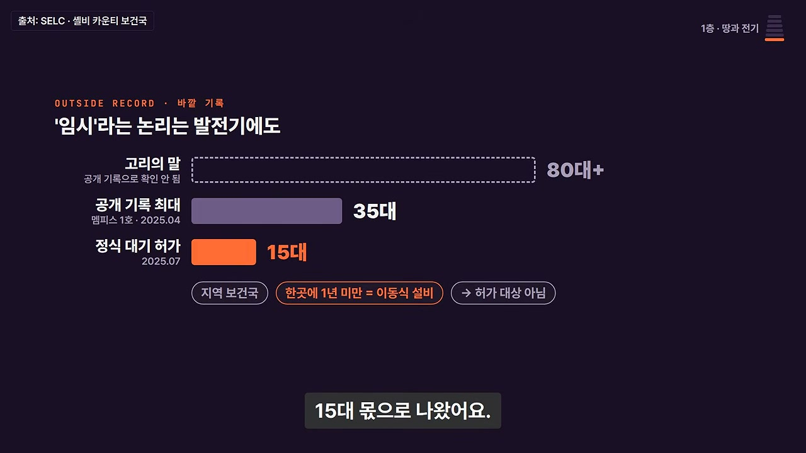
두 번째 층은 컴퓨터다. 고리가 있던 매크로하드는 마이크로소프트를 비튼 이름인데, 사람이 컴퓨터로 하는 일을 그대로 해내는 AI를 만드는 프로젝트다. 화면을 보고 키보드와 마우스를 움직여서 사람처럼 작업한다. 머스크가 2025년 8월 X에 직접 공개했다. 고리는 이런 AI를 인간 에뮬레이터라고 부른다. 테슬라가 옵티머스라는 인간형 로봇으로 사람의 몸이 하는 일을 맡으려 한다면, 이건 사람이 모니터 앞에서 하는 일을 맡으려는 것이다. 그래서 디지털 옵티머스라고도 부른다.
문제는 이 AI를 100만 개 돌리려면 컴퓨터도 100만 대가 필요하다는 거다. 클라우드에서 가상 컴퓨터를 빌리든 엔비디아 장비를 사든 돈이 엄청나게 든다. 그 답이 뜻밖의 곳에서 나왔다. 클립에 나오는 HW4는 테슬라 차에 들어가는 4세대 자율주행 컴퓨터다. 이 HW4가 매크로하드의 대규모 배포를 가능하게 하는 핵심 자산으로 등장한다.
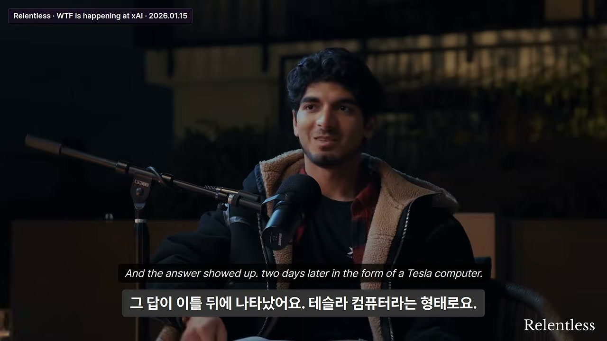
그런데 그 답을 꺼내기 전에 고리는 이 이야기를 해도 될지 잠깐 망설인다. “물론 이 테슬라 컴퓨터 이야기, 아마 다룰지도 모르고 아닐지도 모른다. 사실 이건 공개된 것이다.” 그는 매크로하드로 인간 에뮬레이터를 만들고 있는데, 어떻게 배포할 것인지가 문제라고 말한다. 100만 개 인간 에뮬레이터를 배포하려면 100만 대 컴퓨터가 필요하다. 그런데 그 답이 이틀 뒤 테슬라 컴퓨터 형태로 나타났다.
고리는 테슬라 차량용 컴퓨터가 실제로 매우 자본 효율적이라고 말한다. xAI 모델과 인간이 일하던 전체 컴퓨터 환경을 테슬라 컴퓨터에서 돌릴 수 있으며, 이는 VM이나 AWS, 오라클보다 훨씬 저렴하다. 엔비디아 하드웨어를 직접 사는 것보다도 자본 효율이 좋다. 그래서 훨씬 빠르고 훨씬 높은 규모로 배포할 수 있다고 가정하게 되었고, 그에 맞춰 기대치를 조정했다고 한다.
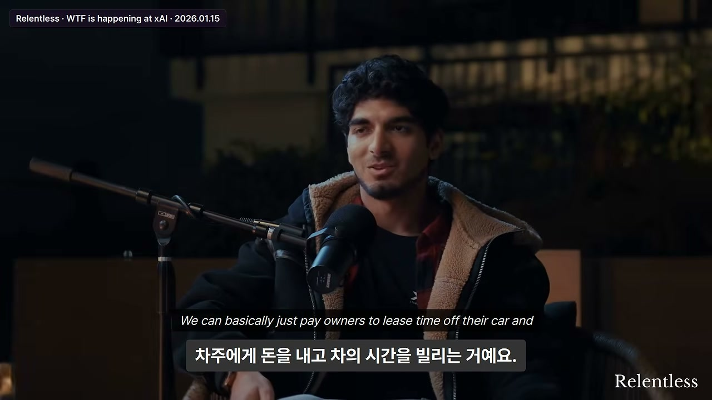
진행자는 테슬라 차량 네트워크를 기반으로 부트스트랩할 수 있느냐고 묻는다. 고리는 그것이 잠재적 해결책 중 하나라고 답한다. 100만 개 VM을 원하는데, 북미에만 테슬라 차가 약 400만 대 있다. 그중 3분의 2 또는 절반이 HW4를 갖고 있다고 가정한다. 이 차들은 70~80%의 시간 동안 유휴 상태로, 아마 충전 중일 가능성이 높다. 차량에는 네트워킹, 냉각, 전력이 이미 있다. 그래서 소유자에게 차량의 유휴 시간을 임대료를 주고 빌려, 인간 에뮬레이터 또는 디지털 옵티머스를 돌릴 수 있다는 것이다.
이 구조에서 소유자는 차량 임대료를 받고, xAI는 일할 수 있는 인간 에뮬레이터를 얻는다. 고리는 이것이 빌드아웃 요구사항이 전혀 없는 방식이라고 강조한다. 필요한 것은 순수 소프트웨어 구현뿐이다. 자산은 이미 거기 서 있으므로, 그대로 가서 사용할 수 있다는 논리다. 진행자는 이 아이디어에 “놀랍다”고 반응한다.
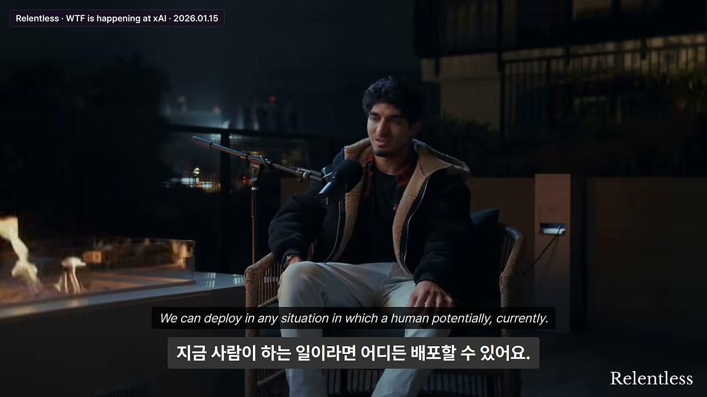
고리는 기본 개념이 매우 단순하다고 말한다. 옵티머스는 인간이 할 수 있는 모든 물리적 작업을 로봇이 자동으로, 비용의 일부로, 24시간 365일 수행하게 한다. 매크로하드는 인간이 디지털로 하는 모든 일에 같은 일을 한다. 키보드와 마우스를 입력하고 화면을 보고 결정을 내리는 일을 인간이 하는 그대로 에뮬레이션한다. 따라서 어떤 소프트웨어의 도입도 전혀 필요 없다. 인간이 현재 있는 어떤 상황에도 배포할 수 있다는 주장이다.
배포 계획을 구체적으로 공개한 것은 아직 아니지만, 처음에는 느리게, 그다음에는 매우 빠르게 진행될 것이라고 한다. 인프라 빌드아웃이 이미 끝났거나, 테슬라 네트워크를 사용하거나, 테슬라 컴퓨터로 자체 데이터센터를 지을 수 있다는 점이 차이를 만든다. 고리는 1,000개 인간 에뮬레이터에서 100만 개로 가는 차이가 실제로는 그리 크지 않다고 말한다. 그것이 가장 큰 도전은 아니라는 것이다.
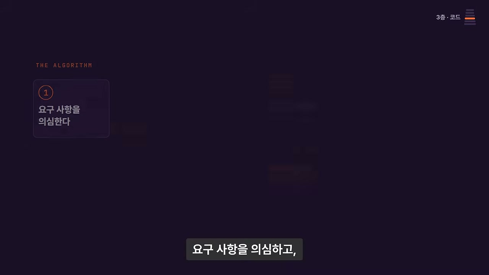
머스크의 회사들에는 알고리즘이라고 부르는 일하는 순서가 있다. 월터 아이작슨이 쓴 머스크 전기에 정리된 5단계다. 요구사항을 의심하고, 지울 수 있는 건 지우고, 단순하게 만들고, 속도를 올리고, 마지막에 자동화한다. 이 중 두 번째 단계에 붙는 말이 유명하다. “지운 것 가운데 적어도 10%를 다시 넣게 되지 않는다면 충분히 지우지 않은 것이다.”
매크로하드의 AI는 사람 대신 화면을 보고 일하므로 30년 된 모니터부터 최신 5K 모니터까지 전부 받아줘야 한다. 여기서 뭘 지웠다가 다시 넣었는지가 클립에 나온다. 또 클립 뒷부분에는 커밋 하나가 얼마짜리인지 계산한 숫자도 나온다. 커밋은 코드를 고친 내용을 공용 저장소에 올리는 단위다. 진행자가 스페이스X식 알고리즘이 있냐고 묻자 고리는 흔히 말하는 그 삭제 말이냐고 되묻는다.
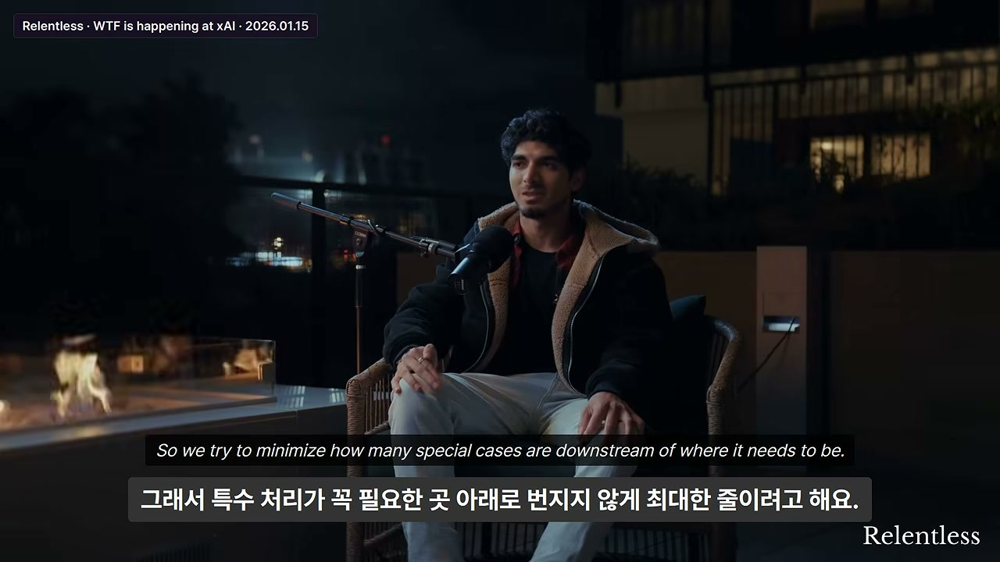
고리는 “그 삭제 말이냐”는 질문에 “그렇다, 항상 그렇다”고 답한다. 그리고 실제로 무언가를 삭제했다가 나중에 다시 추가하는 일이 있다고 말한다. 마지막으로 그랬던 때가 언제냐는 질문에는 “오늘”이라고 답한다. 매크로하드는 변화하는 많은 물리 하드웨어에 배포되기 때문에 테스트 하네스가 어렵다. 그래서 다운스트림에 생기는 특수 케이스를 최소화하려 한다.
예를 들어 디스플레이 스케일링에서는 30년 된 디스플레이와 최신 5K 애플 디스플레이를 모두 지원해야 한다. 그것도 같은 스택에서 처리해야 한다. 그런데 모든 시스템이 항상 이를 만족스럽게 처리하지는 않는다. 특정 수준에서 인코더를 조작해야 했고, 구체적으로 비디오 인코더가 문제였다. 고리는 몰랐지만 특정 인코더가 처리할 수 있는 최대 픽셀 수에는 한계가 있었다고 말한다. 그래서 여러 인코더를 위한 특수 케이스를 제거했다가, 5K 이상 해상도에서 문제를 발견하고 다시 추가했다. 이 사례는 머스크식 삭제 규율이 실제 코드베이스에서 어떻게 롤백과 재추가를 낳는지 보여준다.
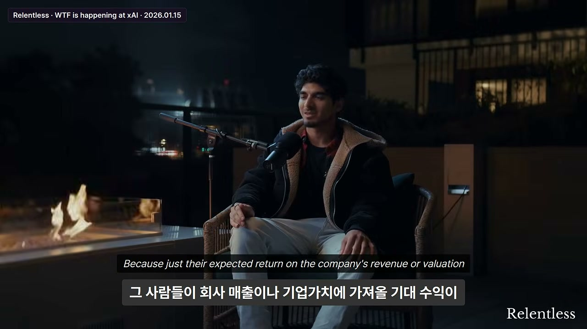
진행자가 xAI 자체에서 가장 흥미로운 점이 무엇이냐고 묻자 고리는 “거기에는 많은 캐릭터가 일한다”고 답한다. 채용도 흥미로운 방식으로 한다. 그가 바보 같다고 생각한 것도 승인되고, 일단 해보고 시도한다. 예를 들어 해커톤을 열어 결과적으로 5명을 채용하면 그만한 가치가 있다고 본다. 그 5명이 회사 매출이나 밸류에이션에 기대되는 수익이 500명 규모 해커톤을 운영하는 비용보다 높기 때문이다. 오버헤드 가치가 오히려 매우 높다는 것이다.
그들은 이번 주 초에 계산을 했다. 고리에 따르면 현재 메인 저장소에 올라가는 커밋 하나의 가치는 약 250만 달러다. 고리는 그날 커밋을 5개 했다. 진행자가 “그럼 1,250만 달러 가치를 추가한 것”이라고 하자 고리는 “가벼운 하루”라고 답한다. 이어 “가벼운 하루의 작업”이라는 농담이 오가고, 그는 “좋은 하루였다”고 말한다. 이 대목은 xAI의 생산성 단위가 일반적인 코드 라인 수가 아니라 회사 가치와 연결된 커밋 가치로 측정되고 있음을 보여준다.
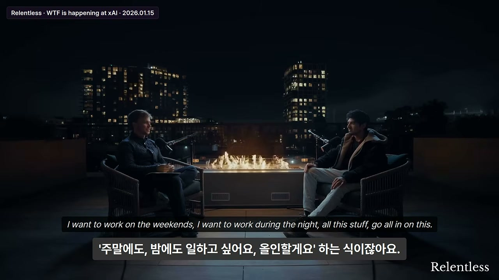
고리는 이런 농담 같은 일화가 재미있다고 말한다. 그리고 레버가 극단적으로 강하다고 표현한다. 함께 일하는 사람, 내부적으로 구축한 도구, 그리고 자기 상사 덕분에 예전보다 훨씬 적은 노력과 시간으로 많은 일을 할 수 있다는 것이다. 진행자는 xAI에 일하고 싶어 하는 사람이 어떤 유형이냐고 묻는다. 첫날부터 주말에 일하고 싶고, 야간에도 일하고 싶어 하는 사람들이 있다는 것이다.
고리는 사람들이 들어올 때 매우 열정적이라고 말한다. 미션 지향적인 측면도 있다. 다만 야망의 종류는 다르다. 어떤 사람은 리더십 사다리를 올라가 관리자로서 더 많은 사람이 자신에게 보고하게 되는 것을 원한다. 어떤 사람은 거대한 기술 스택을 소유하고 싶어 한다. 지금은 핵심 프로덕션 API를 대대적으로 재구축하고 있다. 이 작업은 한 사람이 20개의 에이전트와 함께 수행하고 있다. 그들은 매우 뛰어나고, 할 수 있으며, 실제로 잘 작동하고 있다. 그래서 한 사람이 코드베이스의 거대한 부분을 소유하는 것이 문제되지 않는다.
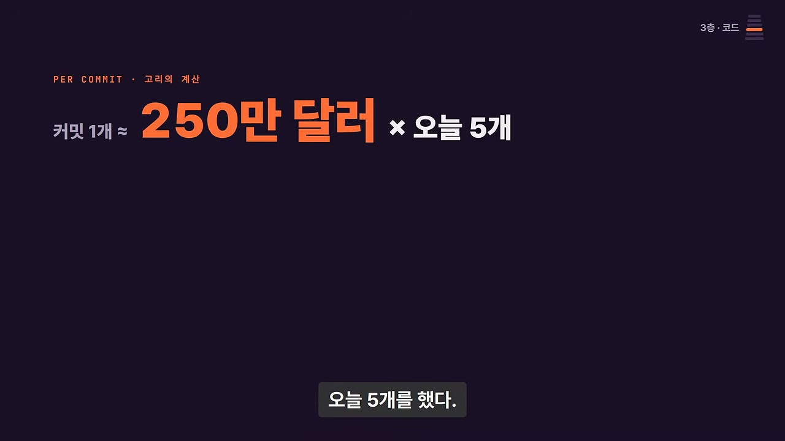
고리는 한 사람이 20개 에이전트와 함께 핵심 프로덕션 API 재구축을 진행하고 있다고 말한다. 에이전트들은 매우 좋고, 그 일을 해낼 수 있으며, 실제로 작동한다. 그래서 한 사람이 거대한 코드베이스 청크를 소유할 수 있다. 이는 xAI에서 개인의 레버리지가 얼마나 커졌는지를 보여주는 핵심 사례다.
그는 “레버가 극단적으로 강하다”고 거듭 말한다. 예전보다 훨씬 적은 노력과 시간으로 많은 일을 할 수 있는 이유는 함께 일하는 사람, 내부 도구, 그리고 상사다. 이어 고리는 팀 사이의 경계 이야기부터 꺼낸다. 이 지점에서 파트 1의 논의는 코드와 사람에서 조직 경계, 삭제의 위험, 롤백 문화로 이동한다.
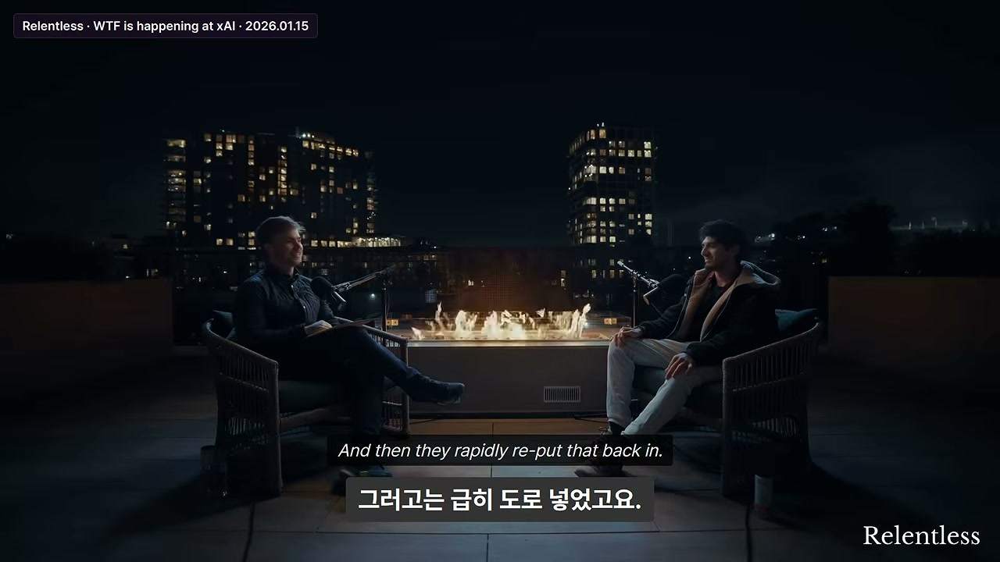
파트 1 마지막 부분에서 고리는 머스크가 DOGE 일을 하던 시절을 언급한다. 그때 에볼라 방지 관련이 삭제됐다가 빠르게 다시 들어온 일이 있었다는 것이다. 진행자는 이런 빠른 과정, 즉 무엇이 필요 없는지 빠르게 판단하고 다시 구현하는 과정에서 무엇이 삭제됐는지 묻는다. 고리는 되돌릴 수 없이 파괴적인 일은 매우 드물다고 답한다. 그는 되돌릴 수 없이 파괴된 사례를 실제로 알지 못한다고 말한다.
대신 자주 있는 일은 무언가가 삭제되거나 제거된 뒤, 누군가 “나 그거 한두 시간 안에 필요해”라고 말하면 롤백하는 것이다. 또는 몇 달 동안 누군가 무언가를 만들고 있는 경우도 있다. 현재 제공된 1편은 이 대목에서 끝난다. 이 부분은 머스크식 삭제 문화가 속도를 만들지만, 동시에 팀 경계와 롤백 비용, 삭제 후 재구현의 마찰을 낳는다는 점을 암시한다.
파트 1은 xAI의 속도를 여러 층으로 해부한다. 땅은 임시 계약과 카니발 예외 조항으로 빨리 확보하고, 전기는 전력망과 트럭 발전기 80대, 배터리와 커패시터를 조합해 버틴다. 컴퓨터는 매크로하드와 디지털 옵티머스를 위해 테슬라 HW4와 400만 대 차량 네트워크를 활용하려 한다. 코드는 머스크 알고리즘의 삭제-단순화-속도-자동화 원칙에 따라 움직이며, 커밋 하나가 250만 달러 가치로 계산될 만큼 강한 레버리지를 낸다. 사람은 열정적이고 야망의 종류가 다양하며, 한 사람이 20개 에이전트와 핵심 API를 재구축한다. 파트 2에서는 이 흐름이 AI 동료와 머스크가 나타나는 밤 등으로 이어질 것으로 보인다.
“무용담도 많고 내기도 많았다.”
콜로서스를 세우던 시기를 묻는 질문에 대한 고리의 첫 답이다. 122일 착공-가동이라는 속도가 단순한 공정 관리가 아니라 전력, 허가, 임시 설비를 둘러싼 모험과 승부였다는 점을 압축한다.
“전력회사 쪽 부하가 높아지면 우리는 꺼지고, 트럭으로 들여온 80대, 어쩌면 그 이상의 이동식 발전기로 완전히 전환한다.”
xAI가 전력망과 어떻게 공존하는지를 보여주는 핵심 발언이다. 학습을 중단시키지 않고 밀리초 단위 변동을 견뎌야 한다는 조건이 붙는다.
“XAI는 사실 카니발 회사인가요?” / “네, 카니발 회사예요.”
임시 부지 계약과 카니발용 예외 조항을 두고 오간 농담이다. xAI가 정식 영구 허가 대신 임시 예외를 활용해 속도를 냈다는 주장을 상징한다.
“테슬라 컴퓨터는 VM이나 AWS, 오라클, 엔비디아 하드웨어를 사는 것보다 훨씬 자본 효율적이다.”
매크로하드의 100만 인간 에뮬레이터 배포 문제에 대한 해법으로 테슬라 HW4가 등장하는 대목이다. 자본 효율이 배포 규모와 속도를 바꾼다는 논리다.
“북미에만 테슬라 차가 400만 대 있다. 그중 절반에서 3분의 2가 HW4를 갖고 있고, 70~80%는 유휴 상태로 충전 중일 가능성이 높다.”
테슬라 차량 네트워크를 분산 컴퓨팅 자산으로 보는 발상의 근거다. 소유자에게 임대료를 지불하고 유휴 컴퓨팅을 빌린다는 구상으로 이어진다.
“1,000개 인간 에뮬레이터에서 100만 개로 가는 차이는 실제로 그리 크지 않다.”
매크로하드의 확장 전략을 요약하는 발언이다. 인프라가 이미 있거나 테슬라 네트워크를 쓸 수 있다면 규모 확장의 병목이 크지 않다는 주장이다.
“지운 것 가운데 적어도 10%를 다시 넣게 되지 않는다면 충분히 지우지 않은 것이다.”
머스크 알고리즘의 두 번째 단계에 붙는 유명한 문장이다. 삭제를 두려워하지 말고, 필요하면 다시 넣으라는 문화를 상징한다.
“지금 메인 저장소에 올라가는 커밋 하나는 약 250만 달러다. 나는 오늘 5개 했다.”
xAI의 생산성과 가치 계산을 보여주는 대목이다. 진행자가 1,250만 달러 가치를 추가했다고 하자 고리는 “가벼운 하루”라고 답한다.
“한 사람이 20개의 에이전트와 함께 핵심 프로덕션 API를 재구축하고 있다.”
xAI에서 개인이 얻는 레버리지가 얼마나 큰지를 보여주는 사례다. 에이전트가 한 사람의 작업 범위를 거대한 코드베이스 수준으로 확장한다.
“되돌릴 수 없이 파괴된 것은 거의 없다. 자주 삭제되지만, 누군가 한두 시간 뒤 필요하다고 하면 롤백한다.”
빠른 삭제 문화의 위험과 복구 가능성을 동시에 보여주는 발언이다. 때로는 몇 달 뒤에야 재구현이 필요해지기도 한다.
이 파트 1의 핵심 메시지는 머스크 회사의 속도가 단일한 비결이 아니라 여러 층의 임시방편, 자산 재사용, 강한 인재 레버리지가 겹쳐 만든 결과라는 점이다. 땅은 임시 계약과 예외 조항으로 빨리 확보하고, 전기는 시·주 전력망과 트럭 발전기 80대, 배터리·커패시터를 조합해 버틴다. 컴퓨터는 매크로하드와 디지털 옵티머스를 위해 테슬라 HW4와 400만 대 차량 네트워크를 활용하려 한다. 코드는 삭제와 롤백을 전제로 한 머스크 알고리즘으로 움직이며, 커밋 하나가 250만 달러 가치로 계산될 만큼 개인과 팀의 레버리지가 크다.
실용적 시사점은 속도를 ‘더 오래 일하기’로만 이해하면 놓치는 것이 많다는 점이다. xAI 사례는 인프라를 임시로라도 먼저 확보하고, 이미 존재하는 자산을 소프트웨어로 재활용하며, 소수의 뛰어난 인재에게 에이전트를 붙여 거대한 작업을 맡기는 방식으로 속도를 만든다. 동시에 리스크도 분명하다. 발전기 80대 주장은 공개 기록과 완전히 일치하지 않고, 임시 허가와 이동식 설비에 의존하는 운영은 규제·환경·전력망 안정성 문제를 낳을 수 있다. 삭제 문화 역시 빠른 롤백을 전제로 하지만, 팀 경계와 몇 달 뒤의 재구현 비용을 만든다.
향후 파트 2에서는 이 파트 1이 예고한 AI 동료, 머스크가 나타나는 밤, 조직 경계와 삭제 문화의 나머지 이야기가 이어질 가능성이 크다. 파트 1만으로도 머스크 제국의 엔진이 어떤 연료로 돌아가는지, 그 연료가 임시 허가·전력 트럭·테슬라 차량·에이전트·커밋 가치 계산으로 구성된다는 점이 선명하게 드러난다.
댓글
GitHub 이슈 기반 댓글 시스템입니다.